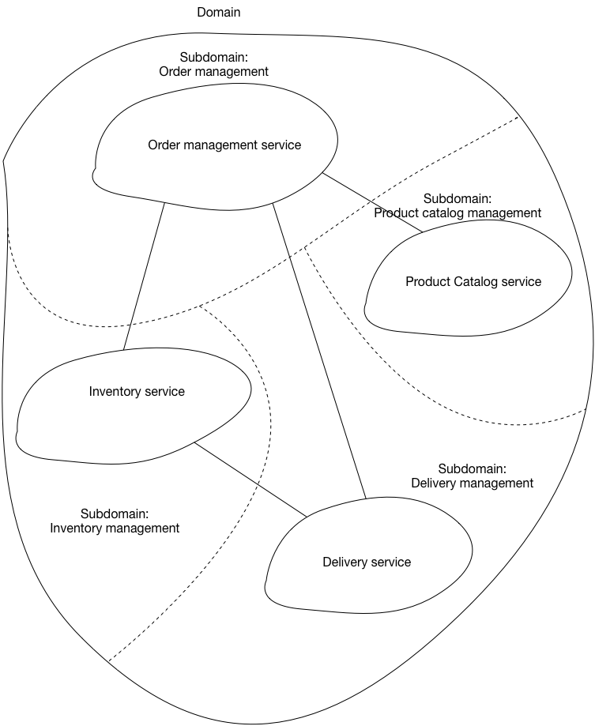

Microservices io 페이지 훑어보기
최근 마이크로 서비스 아키텍처를 적용하는 사이트가 점차 많아지면서 Cloudz Labs에도 마이크로 서비스 아키텍처에 대한 문의가 부쩍 많아지고 있습니다.
CloudZ Labs에서는 작년부터 마이크로 서비스 아키텍처 적용을 위해 필요한 기술들을 리서치하고 적용하는 업무를 진행하고 있습니다.
마이크로 서비스 아키텍처에 관련된 항목을 잘 정리해둔 Microservices.io 페이지 내용을 훑어보며 CloudZ Labs에서 이미 적용 중인 내용과 보충할 내용 추가 리서치가 필요한 내용들을 정리해 볼 생각입니다.
Microservices.io 페이지를 정리한 내용입니다. http://microservices.io/
마이크로 서비스 적용 방법
마이크로 서비스 아키텍처 적용 프로세스
- 패턴 결정 -> 패턴에 도입된 문제 해결 -> 둘 이상이 대안이 되는 경우 한가지 솔루션을 선택 -> 더 이상 해결할 문제가 없을때 까지 반복

모놀리식 vs 마이크로 서비스 패턴 결정
애플리케이션 아키텍처 패턴으로 모놀리식과 마이크로 서비스 패턴 중에 선택하고, 마이크로 서비스 패턴을 선택했다면 마이크로 서비스 아키텍처에서 고려되어야 할 문제들을 도출하고 해결 방법을 찾아야 함.
한 가지 이상의 대안이 있을 경우 최선의 방법으로 한가지 선택.
Core patterns
Microservice
- 지속적인 전달/배치를 가능하게 하여 소프트웨어 개발을 가속화
- 각 구성요소는 독립적으로 배포 가능해야함
- 조직을 소규모로 하며(6-10명) 각 팀은 하나 이상의 서비스를 담당한다.
- 장점
- 서비스가 상대적으로 작음
- 개발자가 더 쉽게 이해 가능함
- 개발자가 생산성이 높아지고 배포 속도도 높아짐
- 다른 서비스와 독립적으로 배포됨으로 새 버전의 서비스를 쉽게 배포할 수 있음
- 독립적으로 확장이 용이
- 기술 스택에 대한 장기 약속을 없앰, 새로운 서비스를 만들 때 그 팀이 원하는 기술 스택으로 작성하면됨
- 단점
- 분산시스템을 만드는 추가 복잡성을 처리해야 함
- 테스트 어려움
- 서비스 간 통신 메커니즘 구현 필요
- 분산 트랜잭션을 구현하지 않고 여러 서비스에 걸쳐있는 유스케이스를 구현해야 함
- 여러 서비스에 걸처있는 유스케이스를 구현하려면 팀 간의 긴밀한 조정이 필요함
- 배포 복잡성, 운영 복잡성
- 증가된 메모리 소비
- 사례
- 넷플리스
- 아마존 : 2계층 아키텍처를 사용하다가 백엔드를 수백 개로 분리, 웹사이트에서는 100~150개의 API를 호출해서 웹페이지 구성
- 이베이 등
Decomposition
마이크로 아키텍처 적용 시 마이크로 서비스를 어떤 단위로 분리해서 운영할 지 결정 필요
이와 관련되서 Cloudz Labs 에서는?
- 업무 담당자들과 마이크로서비스 분리 워크샵 진행
- 비지니스 관점, DDD 관점 등 다양한 방식으로 마이크로서비스 분리를 하기위한 방법 리서치 필요
Deployment patterns
마이크로 서비스는 어떻게 패키지 되고 배포되나?
- 서비스는 다양한 언어, 프레임워크, 프레임워크 버전으로 작성됨
- 각 서비스는 처리량 및 가용성을 위해서 여러 개의 서비스 인스턴스로 구성됨(스케일링)
- 서비스는 독립적으로 배포 가능하고 확장 가능해야 함
- 서비스 인스턴스 간에는 서로 격리되어야 함
- 서비스를 신속하게 구축하고 배포할 수 있어야 함
- 서비스에서 사용하는 리소스(CPI 및 메모리)를 제한할 수 있어야 함
- 각 서비스 인스턴스를 모니터링해야 함
- 신뢰할수 있는 배포
- 가능한 비용 효율적으로 응용프로그램을 배포해야 함
Muliple service instances per host
Service Instance per host
Service Instance per VM
Service Instance per Container
Serverless deployment
Service Deployment platform
- PaaS나 K8S를 활용한 배포 및 라우팅 로드밸런싱은 이 항목에 해당됨
이와 관련되서 Cloudz Labs 에서는?
- PaaS나 K8S 같은 플랫폼에서 제공하는 라우팅 및 로드밸런싱 사용, 해당 메커니즘을 가이드 하고 있음
- 우리가 사용하지 않는 다른 배포 모델도 리서치 필요
Cross Cutting Concerns
분산된 모든 모듈에 연관된 기능을 어떻게 구현하고 운영하나?
Microservice chassis(공통을 위한 boilerplate 작성)
- Externalized Configuration
- Logging
- Helth check
- Metrics
- Distributed Tracing → 서비스가 수백수천 개 되면 이런 공통 관련 설정을 수행하는데 보내는 시간도 무시할 수 없다. 그러므로 이미 결정된 공통 기능들을 바로 구성 가능한 보일러 플레이트(bolierplate) 형태로 작성해 두고 그것을 사용한다.
Externalized configuration
- 네트워크로 연결되는 모든 외부 서비스들의 사용을 구체화해서 환경별로 설정 파일 분리하고 외부 환경 변수 등을 (active property)활용해서 사용해야 함
- 설정에 따라 수정및 재컴파일 하지 않기 위함
이와 관련되서 Cloudz Labs 에서는?
- Spring Boot용 bolierplate 작성
- Config 분리(PaaS에서 Active property 사용해서 환경에 맞는 정보 사용)
- Config 서버 사용
Communication Style
서비스는 클라이언트 요청을 처리해야 하고 때에 따라서 다른 서비스와 통신이 필요한 경우도 있다.
Remote Procedure Invocation
요청/응답기반 프로토콜
- REST
- gRPC
- Apache Thrift
이점
- 간단하고 친숙하다
- 요청/회신 쉽다.
단점
- 일반적인 요청/ 응답만 지원 (알림, 요청/비동기응답, 발행/구독, 발행/비동기 같은 패턴은 지원 안 함)
- 상호 작용이 지속되는 동안 클라이언트와 서버가 계속 사용 중이어야 함으로 가용성이 감소함
- 클라이언트는 사용하려는 서비스 인스턴스의 위치를 알고 있어야 함
Messaging
비동기 메세징 (메세징 채널을 통해 메시지를 교환하여 통신)
- Apach Kafka
- Rabbit MQ
이점
- 서비스와 클라이언트를 분리하는 느슨한 결합
- consumer가 메시지를 처리할때 까지 메시지 브로커가 그 메세지를 버퍼링하므로 서비스의 가용성이 향상됨
- 요청/응답, 알림, 요청/비동기응답, 발행/구독, 발행/비동기응답을 포함한 다양한 통신 패턴 지원
단점
- 메시지 브로커의 가용성이 높아야 하며 이에 따라 브로커의 복잡성이 증가
- 요청/응답 스타일의 통신은 오히려 더 복잡해짐
- 클라이언트는 메시지 브로커의 위치를 알아야 함
Domain-specific protocol
- SMTP 및 IMAP과 같은 이메일 프로토콜
- RTMP, HLS 및 HSD와 같은 미디어 스트리밍 프로토콜 등
이와 관련되서 Cloudz Labs 에서는?
- REST API 가이드
- Message 관련해서는 다양한 아키텍처에 맞는 리서치 필요
External API
API Gateway/Backend For Front-end
마이크로 서비스 기반 애플리케이션의 클라이언트는 개별 서비스에 어떻게 접근하나?
- 마이크로 서비스가 제공하는 API는 클라이언트가 필요로 하는 것과 다르다.
- 마이크로 서비스는 일반적으로 세분화된 API를 제공하고 클라이언트는 이를 조합해서 사용함 (많은 클라이언트가 사용 가능하게 하기위해서)
- 서비스 인스턴스 수와 위치가 동적으로 변경됨
- 서비스는 다양한 프로토콜을 사용할 수 있으며 일부 프로토콜은 웹 친화적이지 않을 수도 있다.
해결방법
- 모든 클라이언트에 대한 단일 진입점인 API Gateway를 구현하거나 각 클라이언트 종류에 대해 별도의 BFF를 구현한다.
- API Gateway
- 단순히 API 프록시/라우트 역할만 수행
- API aggregation
- BFF
- 각 클라이언트에 최적화된 API를 제공함
이점
- 마이크로 서비스로 백엔드가 분할되어 있는 방식을 클라이언트에게는 숨길 수 있다.
- 서비스 인스턴스 위치를 API Gateway에서 결정함
- 각 클라이언트에 최적의 API를 제공함
- 요청/응답 왕복 수를 줄인다.
- 클라이언트에서 백엔드 서비스를 여러 번 호출하는 복잡성을 단순화 시킨다.
- 표준이 아닌 프로토콜을 사용하는 백엔드 서비스와 통신 가능(프로토콜 변환)
단점
- 운영 복잡성: API Gateway 역시 개발, 배포 ,관리되어야 하는 하나의 서비스임
- API Gateway layer 추가로 네트워크 레이턴시 증가함
검토
- API Gateway 구현방법 : Netty, Spring Reactor → NIO 기반 라이브러리
이와 관련되서 Cloudz Labs 에서는?
- API Gateway(ZUUL) 가이드
- BFF 가이드
Service Discovery
서비스 간에는 서로 호출이 필요함, 서비스의 인스턴스는 수와 위치가 동적으로 변경되기 때문에 클라이언트에서 이렇게 동적으로 변하는 서비스에 요청할 수 있는 메커니즘이 적용되어야 함
Client-side Discovery
- 클라이언트에서 서비스 레지스트리에 서비스 인스턴스의 수와 위치를 얻음
- Eureka
- 서비스 ↔ 서비스 레지스트리 통신으로 요청하려는 서비스의 정보를 얻고, 서비스 ↔ 요청 서비스 통신 수행
이점
- Server side Discovery 보다 이동 및 네트워크 layer가 적음
단점
- 서비스 레지스트리에 연결해야 함
- scala나 javascript 같은 언어는 클라이언트 서비스 검색 로직을 구현해야 함
Server-side Discovery
- 라우터를 두고 이 라우터를 활용해서 통신
- 서비스 ↔ 라우터, 라우터 ↔ 서비스 레지스트리, 라우터 ↔ 요청할 서비스
- ELS(Elastic Load Balancer)
이점
- Client Side Discovery에 비해서 클라이언트에서 처리할 코드가 없어서 간단함
- 일부 클라우드 환경에서 이 기능을 제공함(AWS Elastic Load Balancer)
단점
- 라우터가 클라우드 환경에서 제공하지 않는다면 관리해야 하는 또 하나의 운영 서비스가 됨
- Client Side Discovery 보다 네트워크 레이어가 많음
이와 관련되서 Cloudz Labs 에서는?
- Eureka를 활용한 Client Side Discovery 가이드(JAVA로 구성된 앱이 아닐 경우 대안 리서치 필요)
Reliability
하나의 요청을 처리하기 위해 여러 개의 서비스들이 협업하는 경우가 있음. 한서비스가 다른 서비스를 동기로 호출할 때 다른 서비스의 장애가 내 서비스의 장애가 되지 않도록 처리해야 함.
Circuit Breaker
- 요청하는 서비스에서 요청의 연속실패 회수의 임계값을 설정하고 임계값을 초과하면 Circuit Breaker가 동작해서 서비스를 호출하려는 모든 시도가 즉시 실패하고 미리 등록한 fallback 함수를 수행함
- Netfilx OSS hysrix
이점
- 서비스의 장애가 전파되지 않음
단점
- 적절한 임계치를 설정하는 것이 어려움
이와 관련되서 Cloudz Labs 에서는?
- Hystrix 가이드
Data management
데이터 일관성 유지하면서 쿼리 수행 방법(데이터 베이스 관리 영역)
이와 관련되서 Cloudz Labs 에서는?
- 마이크로 서비스 아키텍처에서 DB 나누고 운영하는 부분이 가장 어렵다.(계속 계속 리서치 필요)
Security
백엔드 API 서비스에 (마이크로 서비스) Client의 신원을 전달하는 방법은 무엇이 있을까.?
Access Token
- 토큰을 활용해서 요청을 인증함
이와 관련되서 Cloudz Labs 에서는?
- Oauth 리서치 중
Testing
마이크로 서비스는 다양한 서비스로 구성됨. 다른서비스를 호출하면서 하나의 요청을 처리하는 경우도 있으므로 내 서비스 이외에 다른 서비스가 올바르게 작동하는지 확인하는 자동화된 테스트를 작성해야 한다.
End-to-End Test는 어렵기 때문에.
Service Component Test
- A test suite that tests a service in isolation using test doubles for any services that it invokes.
Service Integration Contract
- 서비스를 사용하는 다른서비스 개발자가 작성한 테스트 suite 활용
이와 관련되서 Cloudz Labs 에서는?
- Contract Test 리서치
Observability
Log aggregation
마이크로 서비스로 구성된 애플리케이션은 여러 서비스, 여러 인스턴스로 구성된다. 하나의 요청은 여러 서비스를 걸쳐 있을 수 있다.
각 서비스 인스턴스는 수행 중인 작업에 대한 정보를 표준화된 형식으로 로그파일에 작성해야 하며 로그에는 오류, 경고, 정보 및 디버거 메시지가 들어있다.
- 중앙 집중식 로깅 서비스 사용 권장
- 많은 로그를 처리하기위해서는 많은 인프라 필요
Application Metrics
개별 작업에 대한 통계를 수집하는 service instument 활용
- 애플리케이션 동작에 대한 깊은 통찰력을 제공한다.
Audit logging
- 사용자가 최근 수행한 작업을 파악하는데 유용
- DB에 사용자 활동 기록
Distributed tracing
- 마이크로 서비스의 하나의 요청은 여러 개의 서비스에 걸쳐 있을 수 있음. 이런 경우 하나의 요청을 확인하기 위한 분산되어있는 여러 로그를 한꺼번에 확인해야 될 필요성이 있음
- Zipkin
Exception Tracking
- exception을 집계하고 추적하고 알림을 주는 중앙 집중식 exception처리 서비스를 둔다.
Health Check API
- 유효한 서비스에만 요청이 되도록 서비스가 각 서비스가 health check되어야 함
Log Deployments and Changes
- 모든 배포와 변경사항을 기록해야 한다.
이와 관련되서 Cloudz Labs 에서는?
- PaaS에서 로그 중앙 수집 방법 가이드
- zipkin 가이드
UI patterns
Server-side page fragement composition
- 각 마이크로 서비스에서 HTML 조각을 생성하고, UI 팀은 서비스별 HTML 조각을 합쳐서 페이지를 작성하는 페이지 템플릿을 제공한다.
Client-side UI composition
- Each team develops a client-side UI component, such an AngularJS directive, that implements the region of the page/screen for their service. A UI team is responsible implementing the page skeletons that build pages/screens by composing multiple, service-specific UI components.
이와 관련되서 Cloudz Labs 에서는?
- 마이크로서비스에서 가장 효율적인 Front 구현에 대해서 지속적인 리서치 필요
마이크로서비스로 분행하는 방법(모델링)
- 서비스는 소규모 팀이(two pizza : 6-10명) 개발하고 테스트 할 수 있을 만큼 작아야 함
- 각 팀은 자율적이어야 하고 다른 팀과 최소한의 협업을 통해 서비스를 개발하고 배포하여야 함
- OOD(Object Oriented Design), SRP(Single Resposibility Priciple), CCP(Common Closure Principle)
- 새롭고 변경된 요구 사항이 단일 서비스에만 영향을 미치도록 분해함
- 각 서비스는 구현을 캡슐화하는 API로 느슨하게 결합되어야 한다. 클라이언트에 영향을 주지 않고 구현을 변경해야 함
- 각 서비스는 테스트 가능해야 함
비지니스 역량으로 분해
분해방식
- 비지니스 기능에 해당하는 서비스 정의
- 비지니스 기능은 비지니스 아키텍처 모델링의 개념
- 온라인 상점의 비지니스 모델링

이점
- 비지니스 기능이 이미 안정적이기 때문에 안정적인 아키텍처가 됨(이해 쉬움)
- 개발팀은 기술적인 기능보다는 비지니스 가치를 제공하기 위한 자치 조직이 됨
- 응집력 있고 느슨하게 결합된 서비스 (이미 비지니스에서 구분된)
문제점
- 비지니스 기준으로 서비스를 분리하기 위해서 비지니스에 대한 이해 필요
하위 도메인으로 분해
분해방식
- DDD( Domain Driven Design) 하위 도메인에 해당하는 서비스를 정의.
- 도메인은 여러 하위 도메인으로 구성됨
- core- 비지니스를 위한 핵심 차별화 요소이자 애플리케이션의 가장 중요한 부분
- supporting - 비지니스와 관련은 있지만 차별화 요소 아님, 사내에서 개발하거나 외주줘도 됨
- generic - 비지니스와 관련이 없는 기능으로 가능하다면 상용 서비스들을 활용
- 온라인 상점의 하위도메인 
이점
- 하위 도메인이 이미 안정적이기 때문에 안정적인 아키텍처가 됨
- 개발팀은 기술적인 기능보다는 비지니스 가치를 제공하기 위한 자치 조직이 됨
- 응집력 있고 느슨하게 결합된 서비스 ( 이미 비지니스에서 구분된)
문제점
- 하위 도메인과 서비스를 식별하려면 비지니스에 대한 이해 필요
데이터 일관성 유지하면서 쿼리 수행방법( 데이터 베이스 관리영역)
- 서비스당 데이터베이스를 가지는것을 원칙으로 한다. 공유 데이터는 안티 패턴임
마무리
마이크로 서비스는 알면 알수록 정해진 답이 없고, 상황에 맞게 마이크로 서비스를 시도하는 목적에 최적화 하기 위한 아키텍처로 그때그때 달라져야 된다는 생각이 듭니다. 그러기 위해선 마이크로 서비스에 활용할 수 있는 기술 요소들에 대한 정확한 이해가 가장 중요하겠지요.